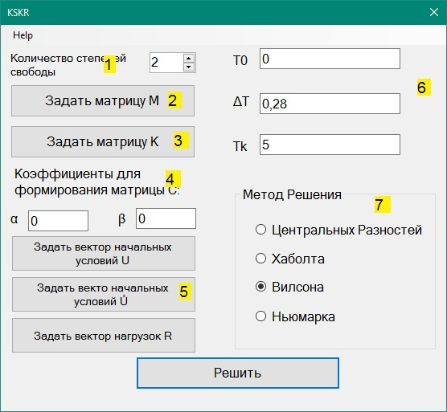
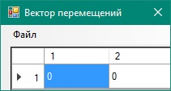

При запуске приложения открывается главное окно приложения.

1. Установка количества степеней свободы.
2. Инициализация матрицы масс. (по нажатию данных кнопок открывается окно с таблицей для ввода значений матрицы)
3. Инициализация матрицы жесткости. (по нажатию данных кнопок открывается окно с таблицей для ввода значений матрицы)
Помимо ручного ввода значений, приложение поддерживает функцию чтение значений векторов и матриц из файла, причём для матриц существует возможность указать тип считываемой матрицы: считать обычную матрицу или ленточную, записанною компактной форме. Выбрать режим можно в окне ввода матриц. Считываемы матрицы должны находиться в файле с расширением .txt. Элементы должны располагаться через пробел. Например, для матрицы 2х2 и файла с содержимым:
2,01 0,01
0,01 1,01
0 0
будет получена следующая матрица:
При этом пользователь получит предупреждение, т.к. размерности ожидаемой матрицы и матрицы, записанной в файле, не совпадают.
!Внимание: в считываемом файле качестве разделителя дробной и целой части обязательно должна быть «,»(запятая).
Файл с ленточной матрице предполагает несколько другой формат:
Здесь в первой строке записано число, равное количеству верхних ненулевых диагоналей, а число во второй строке число, равное количеству нижних ненулевых диагоналей, а дальше записана матрица в сжатой форме. После считывания такой матрицы в ленточном режиме получим следующий результат:
4. Инициализация коэффициентов для формирования матрицы C.
5. Инициализация векторов (по нажатию данных кнопок открывается окно с таблицей для ввода значений векторов)

6. Инициализация начальных параметров
T - начальный момент времени
ΔT - шаг
5. Выбор метода решений
7. Выбор метода решения.
Решение методами Центральных разностей и Хаболта осуществляются без ввода дополнительных коэффициентов, а для двух други необходим ввод таковых.
При выборе метода Вилсона или Нь.марка и нажатии кнопки решить, откроется онко ввода дополнительных коэффициентов, после чего будет выполнен расчет.
Результатом решения представляются два окна:
1. Решение в табличном виде:
2. Решение в графическом виде.
В графическом виде можно выбрать номер линии, отображаемой на форме, путем ввода ее номера в поле ввода:
Так же номера можно казывать через "-" (1-3) или через "," (1,3)
При задании вектора нагрузок возможно задать не просто константное значение, а функцию от времени. При этом имя переменной должно всегда быть t и оно должно оборачиваться в квадратные скобки – sin([t]) и др. Список поддерживаемых функций можно посмотреть здесь.
С вопросами и пожеланиями пишите на: justforfunby@gmail.com или romaxa95.95@gmail. Или же вы можете попытаться внести желаемые изменеия сами :). Исходный код проекта можно найти здесь.